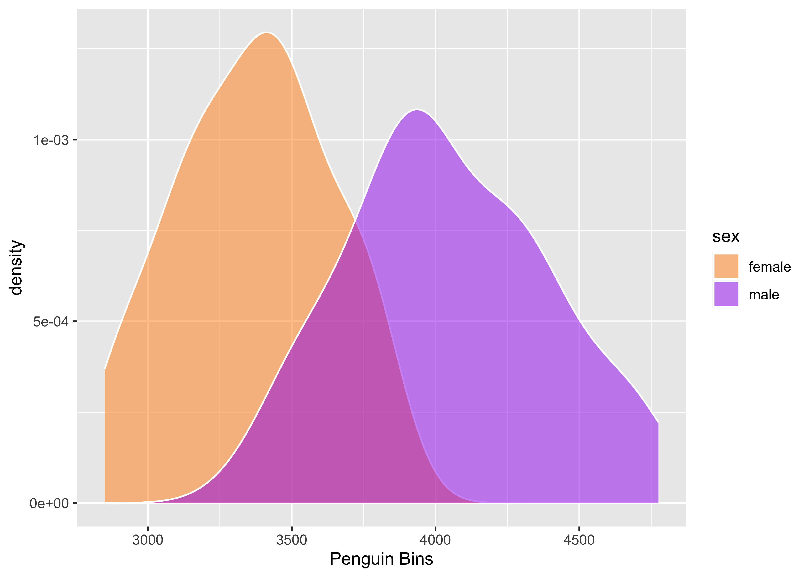

A programming paradigm introduced by Donald Knuth in which a computer program is given an explanation of its logic in a natural language, such as English, interspersed with snippets of macros and traditional source code, from which compilable source code can be generated.
Initial explore
We can do a quick exploration of the data with skimr::skim(). This will report the counts of various variables, along with some basic descriptive statistics. The skimr package is fantastic for quickly getting a sense of your datasets.
Ahead of skimr there are 344 penguins in this dataset, and the unique species are Adelie, Gentoo, Chinstrap.
skimr provides a frictionless approach to summary statistics which conforms to the principle of least surprise, displaying summary statistics the user can skim quickly to understand their data. It handles different data types and returns a skim_df object which can be included in a pipeline or displayed nicely for the human reader.
The penguins split by species show a specific relationship between weight and flipper length, where the Adelie female penguins are the lighest and have the shortest flippers.
Let’s move on to some plots, for the overall distributions and for just the Adelie penguins. The overall distribution of the data by species shows some overlap in body weight for Adelie/Chinstrap, but more of a separation for the Gentoo penguins.
penguins%>%ggplot(aes(body_mass_g, fill =species))+geom_density(color ="white", alpha =0.5)+scale_fill_manual(values =c("darkorange","purple","cyan4"))+labs(x ="Penguin Bins")
When we compare just within the Adelie penguins, we can see more of a specific separation of male vs female. However, there is still a decent amount of overlapping data.
penguin_plot<-smaller%>%filter(!is.na(sex))%>%ggplot(aes(body_mass_g, fill =sex))+geom_density(color ="white", alpha =0.5)+scale_fill_manual(values =c("darkorange","purple"))+labs(x ="Penguin Bins")penguin_plot

Lastly we can fit a basic linear model comparing body weight in grams to the flipper length of the penguins by specific species. There is a strong linear relationship, although it’s a bit difficult to distinguish between Chinstrap and Adelie penguins.
penguin_size_plot<-penguins_clean%>%ggplot(aes(x =body_mass_g, y =flipper_length_mm, color =species))+scale_color_manual(values =c("darkorange","purple","cyan4"))+geom_point(size =2, alpha =0.5)+labs(x ="Mass (g)", y ="Flipper Length (mm)")+geom_smooth(aes(group ="none"), method ="lm")penguin_size_plot
We can save the overall distribution and the linear model plot.
Moving on to some basic modeling we can see if what kind of relationships we observe in the data. Note that I’m really not following any plan, just indicating how you can fit some different models all at once with dplyr + broom.
model_inputs<-tibble( model_form =c(list(flipper_length_mm~body_mass_g),list(species_num~bill_length_mm+body_mass_g+sex),list(flipper_length_mm~bill_length_mm+species)), data =list(penguins_clean))model_metrics<-model_inputs%>%rowwise(model_form, data)%>%summarize(lm =list(lm(model_form, data =data)), .groups ="drop")%>%rowwise(model_form, lm, data)%>%summarise(broom::glance(lm), .groups ="drop")
Wrap up
We can then take the model outcomes and throw them into a quick gt table.
Overall, this was a quick overview of the beauty of literate programming. We have R code that is self-documenting, as we capture our thoughts and the outputs in a single document. We know at some level that the code works since it “logs” the outputs at various stages and could still output to additional log files. To render it has to run successfully in a linear fashion, and it is human readable as code, via the visual editor or even in version control like Git!
---title: "Penguins Distilled"description: | A great new article on Penguinsauthor: Tom Mockaffiliation: RStudiodate: "`r Sys.Date()`"format: html: toc: true toc-depth: 4---```{r setup, include=FALSE}knitr::opts_chunk$set(echo =TRUE, warning =FALSE)library(tidyverse)library(palmerpenguins) # need to installlibrary(broom) library(skimr) # need to installlibrary(bslib) # need to install```### Literate ProgrammingPer [Donald Knuth](https://en.wikipedia.org/wiki/Literate_programming)> A programming paradigm introduced by Donald Knuth in which a computer> program is given an explanation of its logic in a natural language,> such as English, interspersed with snippets of macros and traditional> source code, from which compilable source code can be generated.### Initial exploreWe can do a quick exploration of the data with `skimr::skim()`. Thiswill report the counts of various variables, along with some basicdescriptive statistics. The `skimr` package is fantastic for quicklygetting a sense of your datasets.Ahead of `skimr` there are `r nrow(penguins)` penguins in this dataset,and the unique species are `r unique(penguins$species)`.Per the [rOpenSci `skimr`docs](https://docs.ropensci.org/skimr/index.html):> `skimr` provides a frictionless approach to summary statistics which> conforms to the principle of least surprise, displaying summary> statistics the user can skim quickly to understand their data. It> handles different data types and returns a skim_df object which can be> included in a pipeline or displayed nicely for the human reader.```{r}penguins %>%group_by(species) %>% skimr::skim() %>%select(-contains("numeric.p"))```------------------------------------------------------------------------### Specific statisticsWe can also explore specific statisticsThe penguins split by species show a specific relationship betweenweight and flipper length, where the Adelie female penguins are thelighest and have the shortest flippers.```{r}penguins %>%group_by(species, sex) %>%summarize(n =n(), weight =mean(body_mass_g, na.rm =TRUE),flipper_length =mean(flipper_length_mm, na.rm =TRUE) ) %>%arrange(desc(weight))```Looks like the Adelie are the lightest penguin. I want to see theirdistribution along with the overall distribution.```{r}penguins %>%filter(is.na(sex))``````{r}smaller <- palmerpenguins::penguins %>%filter(species =="Adelie", !is.na(body_mass_g))```### Cleanup the dataIf you noticed above, there was some NA or missing data. We can removethose rows for now.```{r}penguins_clean <- penguins %>%na.omit() %>%mutate(species_num =as.numeric(species))```### Plot SectionLet's move on to some plots, for the overall distributions and for justthe Adelie penguins. The overall distribution of the data by speciesshows some overlap in body weight for Adelie/Chinstrap, but more of aseparation for the Gentoo penguins.```{r}penguins %>%ggplot(aes(body_mass_g, fill = species)) +geom_density(color ="white", alpha =0.5) +scale_fill_manual(values =c("darkorange","purple","cyan4")) +labs(x ="Penguin Bins")```When we compare just within the Adelie penguins, we can see more of aspecific separation of male vs female. However, there is still a decentamount of overlapping data.```{r}penguin_plot <- smaller %>%filter(!is.na(sex)) %>%ggplot(aes(body_mass_g, fill = sex)) +geom_density(color ="white", alpha =0.5) +scale_fill_manual(values =c("darkorange","purple")) +labs(x ="Penguin Bins")penguin_plot```Lastly we can fit a basic linear model comparing body weight in grams tothe flipper length of the penguins by specific species. There is astrong linear relationship, although it's a bit difficult to distinguishbetween Chinstrap and Adelie penguins.```{r}penguin_size_plot <- penguins_clean %>%ggplot(aes(x = body_mass_g, y = flipper_length_mm, color = species)) +scale_color_manual(values =c("darkorange","purple","cyan4")) +geom_point(size =2, alpha =0.5) +labs(x ="Mass (g)", y ="Flipper Length (mm)") +geom_smooth(aes(group ="none"), method ="lm")penguin_size_plot```We can save the overall distribution and the linear model plot.```{r}ggsave("penguin-dist.png", penguin_plot, dpi ="retina", height =8, width =8)ggsave("penguin-smooth.png", penguin_size_plot, dpi ="retina", height =8, width =8)```### Modeling sectionMoving on to some basic modeling we can see if what kind ofrelationships we observe in the data. Note that I'm really not followingany plan, just indicating how you can fit some different models all atonce with `dplyr` + `broom`.```{r}model_inputs <-tibble(model_form =c(list(flipper_length_mm ~ body_mass_g),list(species_num ~ bill_length_mm + body_mass_g + sex),list(flipper_length_mm ~ bill_length_mm + species) ),data =list(penguins_clean)) model_metrics <- model_inputs %>%rowwise(model_form, data) %>%summarize(lm =list(lm(model_form, data = data)), .groups ="drop") %>%rowwise(model_form, lm, data) %>%summarise(broom::glance(lm), .groups ="drop")```### Wrap upWe can then take the model outcomes and throw them into a quick `gt`table.```{r}model_metrics %>%select(model_form, r.squared:p.value) %>%mutate(model_form =as.character(model_form)) %>% gt::gt() %>% gt::fmt_number(r.squared:statistic) %>% gt::fmt_scientific(p.value) %>% gt::cols_width( model_form ~px(150) )```Overall, this was a quick overview of the beauty of literateprogramming. We have R code that is self-documenting, as we capture ourthoughts and the outputs in a single document. We know at some levelthat the code works since it "logs" the outputs at various stages andcould still output to additional log files. To render it has to runsuccessfully in a linear fashion, and it is human readable as code, viathe visual editor or even in version control like Git!------------------------------------------------------------------------